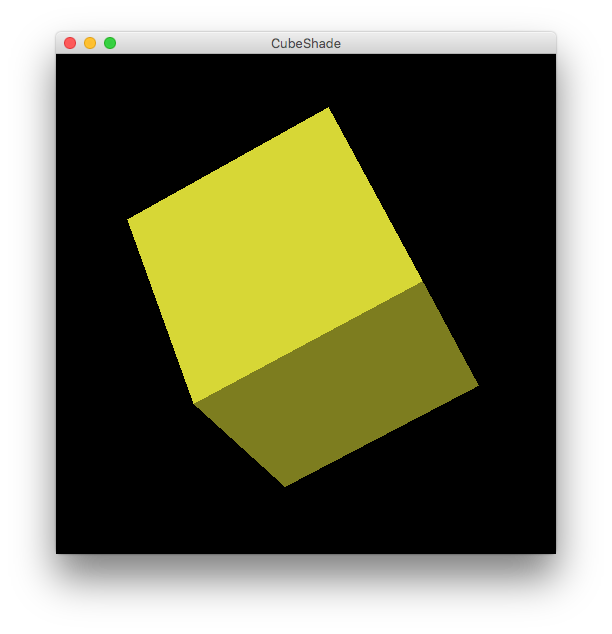
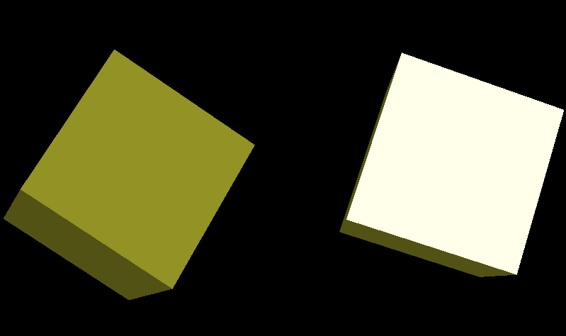
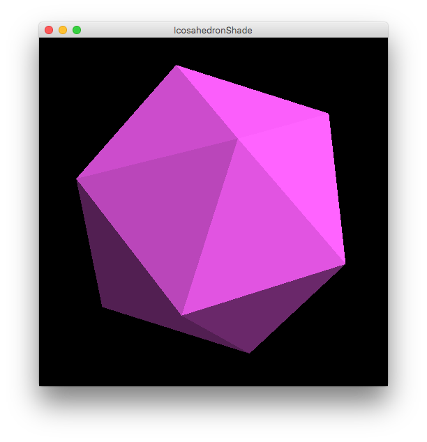
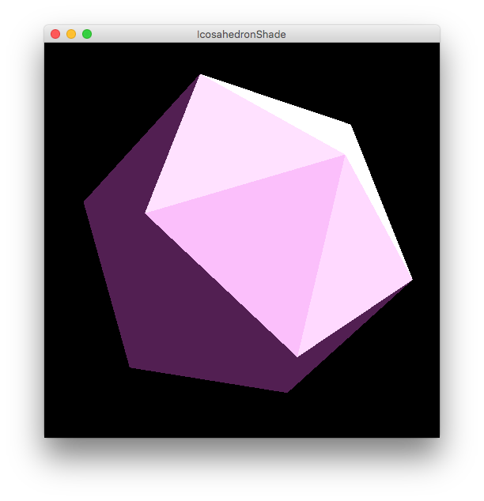
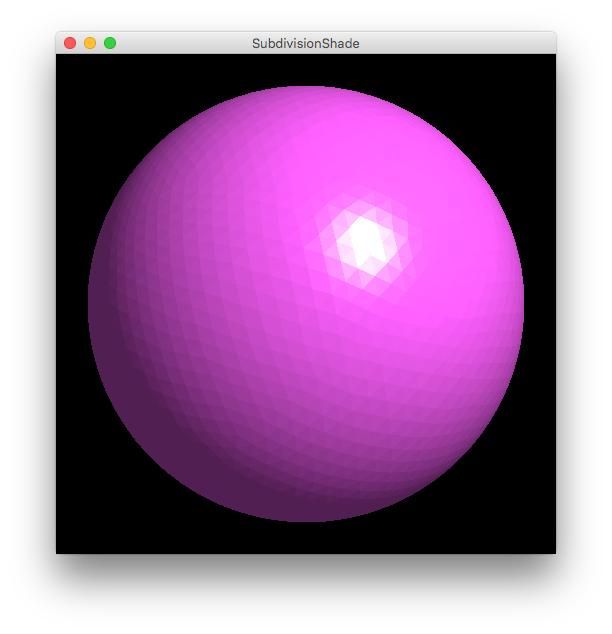
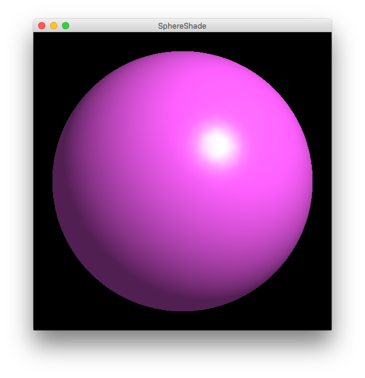
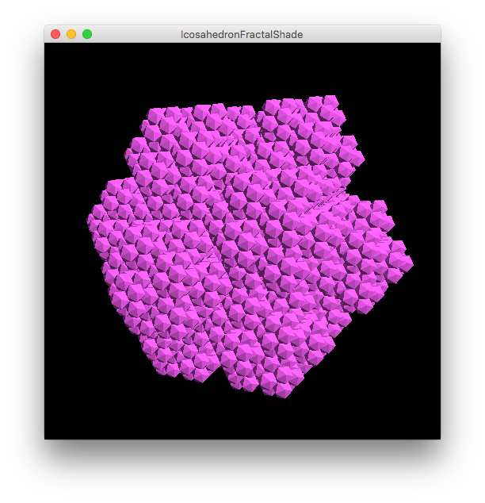
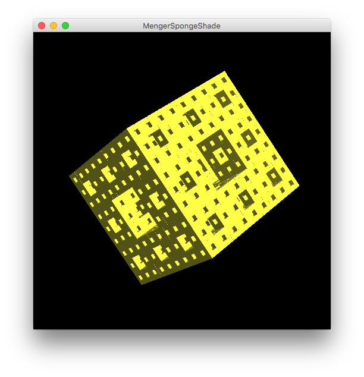

| 氏名 | 越智 秀次 |
|---|---|
| クラス | 理 科 1 類 11 組 |
| 学生証番号 | J4-170235 |
略
ochihidejinoMacBook-Pro:Chap17 ochihideji$ java CubeShade

光源位置を(5,5,0)から無限遠に変更してみる(すなわちLight.javaの8行目のコメントアウトを外し7行目をコメントアウトする)と、実行結果は 以下のようになる。左側は光源位置が無限遠、右側は光源位置がデフォルトの場合である。立方体の回転角度はほぼ同じであるが、右側の方は入射光の鏡面成分によって面が白く表示されているのに対し、左側の方はそのようになっていない。このような光源位置が無限遠であるような光源は平行光線の光源となり、太陽光の表現などに用いられる。
略
ochihidejinoMacBook-Pro:Chap17 ochihideji$ java IcosahedronShade

鏡面反射の減衰係数を100分の1にすると下のような表示になり鏡面反射によって明るくなっている部分がかなり広くなることが確認できる。
略
ochihidejinoMacBook-Pro:Chap17 ochihideji$ java SubdivisionShade 4

シュブルール錯視に似た錯視として「マッハバンド」がある。濃淡がわずかに異なるグレーの領域が２つ隣接した時、それらの境界付近で暗い方の領域はより暗く、明るい方の領域はより明るく強調されて見える。これによってマッハバンドではバンド上に実際には存在しないはずの明度勾配を持った領域が出現する。錯視の原理はシュブルール錯視も同じであるが、結果的に引き起こされる現象は両者の間で異なる。
略
ochihidejinoMacBook-Pro:Chap17 ochihideji$ java SphereShade 4

このプログラムでは法線ベクトルが頂点に割り当てられているので、回転中に鏡面反射が極めて限られた角度で起こりやや不自然に見える(面ではなく頂点に対して反射しているように見える)。再帰回数を0にして実行するとよくわかる。
ShadingIcosahedronFractal.java
public class ShadingIcosahedronFractal extends FractalObject {
protected ShadingIcosahedronFractal(int times) {
super(times);
primitive = new ShadingIcosahedron();
int nv = primitive.vertices();
float phi = (float)(1 + Math.sqrt(5)) / 2;
s = 1.0 / (1.0 + phi);
v = new double[nv][3];
for (int i = 0; i < nv; i ++)
for (int j = 0; j < 3; j++)
v[i][j] = primitive.vertex(i, j) * (1.0 - s);
}
}
IcosahedronFractalShade.java
public class IcosahedronFractalShade extends ObjectShade {
public static void main(String[] args) {
if (args.length == 0) {
System.err.println("Usage: IcosahedronFractalShade #iteration");
}
else {
(new IcosahedronFractalShade("IcosahedronFractalShade", Integer.parseInt(args[0]))).showFrame();
}
}
protected IcosahedronFractalShade(String name, int times) {
super(name);
object = new ShadingIcosahedronFractal(times);
}
}
ochihidejinoMacBook-Pro:Chap17 ochihideji$ java IcosahedronFractalShade 3

プログラムとしてはフラクタル立体の描画に用いたプログラムのprimitiveとして本章で作成したIcosahedronshadeを登録するだけなので単純である。
ShadingMengerSponde.java
MengerSpongeShade.java
ochihidejinoMacBook-Pro:Chap17 ochihideji$ java MengerSpongeShade 3

影の表現がないため、鏡面反射の起こる角度では穴の奥も非常に明るく表示されていまいメンガースポンジの様子がわかりにくくなる。
4時間程度
円柱のシェーディング表示に挑戦しようとしたが、何から取り掛かれば良いのかわからず断念した。
授業全体を振り返ってみて、3DCGに関する基本的な事柄はもちろんのこと、プログラミングの基礎やターミナルの扱い方なども学ぶことができてよかったです。プログラミングについてはまだまだ初心者レベルなので、これ以降継続的に学習していきたいと思います。